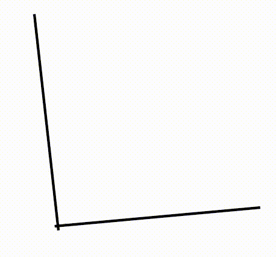

Onde Sala S-307-3 – 3º andar, Torre 1, Bloco A Ementa Conceitos geométricos básicos. Congruência de triângulos. Lugares geométricos. Proporcionalidade e semelhança. Áreas de figuras planas. Trigonometria e geometria. Conceitos básicos em geometria espacial. Alguns sólidos simples. Poliedros convexos. Volume de sólidos.
Referências
- MUNIZ NETO, A. C. Geometria. SBM, 2013 (Coleção PROFMAT).
- PROFMAT, MA13– Geometria. Disponível em : http://www.profmat-sbm.org.br/ma13.
DATAS: 21/10 e 09/12
- Conceito Final [+info]
Links
- Os Elementos em html (inglês)
- R. Bianconi, Como ler e estudar matemática?
- Fernando Q. Gouvêa e Shai Simonson, How to Read Mathematics ( uma tradução "rápida e grosseira", segundo o tradutor, aqui).
- Revista Professor de Matemática Online
- Provas nacionais de MA13 (pdf; 6.6MB)
- Exames de qualificação (pdf; 4.1MB)
- Da semana 3: (1)a probabilidade do palito quebrado formar triângulo (em inglês); (2)Caixeiro Viajante e os problemas do milênio; (3)a agulhas de Buffon.
- fórmula de Euler no wikipedia.

- semana 1.Apresentação. Conceitos geométricos básicos,
ângulos. (pdf)refs.: sec. 1.1,1.2 do livro
texto.
Para a próxima aula:
--Assistir ao vídeo Polígonos(10 min.)
--Problema 3.1, pg. 24 do livro texto. - semana 2. Congruência de triângulos: os casos LAL, ALA e LLL. Aplicações de congruência. refs.: sec. 2.1,2.2,2.3 do livro texto.
- semana 3. Congruência de triângulos: ; paralelismo. A desigualdade triangular; quadriláteros notáveis. refs.: sec. 2.3,2.4,2.5 do livro texto. -- Assistir o vídeo Quadrilateros Notaveis I(13 min.). Veja links ao lado para referências sobre algumas curiosidades faladas brevemente na aula.
- semana 4. Lugares geométricos: lugares geométricos
básicos. Pontos notáveis de um triângulo; tangência e ângulos no
círculo. refs.: sec. 3.1,3.2,3.3 do livro texto.
Para a próxima aula ler sec. 3.4 e 3.5 do livro texto. - semana 5. Arcos capaz. Círculos associados a um
triângulo; quadriláteros inscritíveis e circunscritíveis
refs.: sec. 3.4 e 3.5 do livro texto. - semana 6. Exercícios.
refs.: cap. 1,2,3 - semana 7. Avaliação.
refs.: cap. 1,2,3 - semana 8. Feriado.
- semana 9. Proporcionalidade e semelhança
refs.: cap. 4. Assistir ao video Potencia de um Ponto (15 min) e fazer exercícios da seção 4.5. - semana 10. Áreas de figuras planas.
refs.: cap. 5. - semana 11.Trigonometria e geometria.
refs.: cap. 6. - semana 12.Conceitos básicos em geometria espacial e
sólidos simples.
refs.: cap. 7 e 8. Assistir ao video Esferas (19 min) e fazer exercícios da seção 7.3 e 7.4 - semana 13.Volume.
- semana 14. Avaliação
- semana 15 Substitutiva